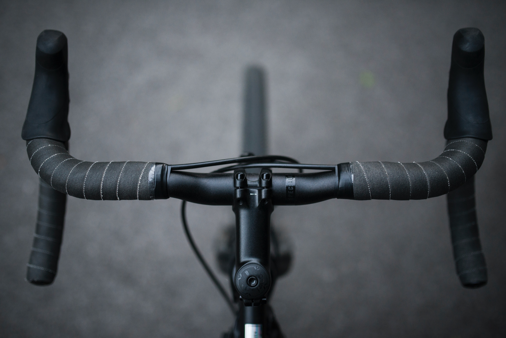
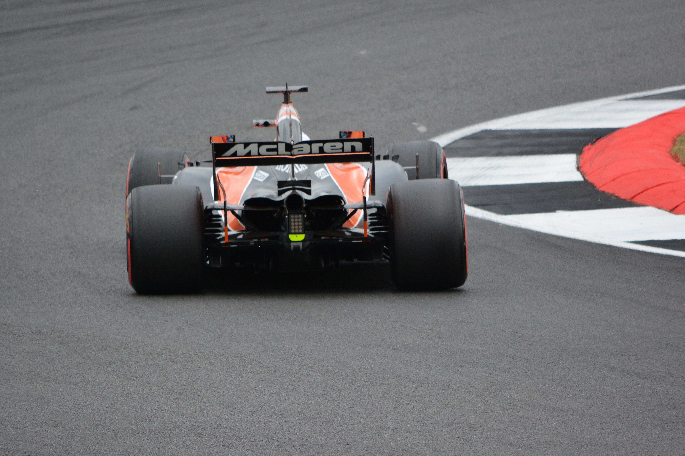

Hobby's en interesses
Op deze pagina ga ik wat meer uitleg geven over mijn hobby's en interesses, zoals wanneer ik ben gestart en waarom.
Hobby's
Verschillende van mijn hobby's zijn:
Volleybal
 1 van mijn hobby's is volleybal, dit doe ik sinds 2017. Ik ben gestart door een vriend dat al volleybal speelde.
Ik had toen een training mee gedaan en vond het helemaal geweldig, ik was meteen verkocht.
Ik speel in de club VC Berlaar te Berlaar. Dit doe ik al sinds het begin dat ik volleybal speel.
1 van mijn hobby's is volleybal, dit doe ik sinds 2017. Ik ben gestart door een vriend dat al volleybal speelde.
Ik had toen een training mee gedaan en vond het helemaal geweldig, ik was meteen verkocht.
Ik speel in de club VC Berlaar te Berlaar. Dit doe ik al sinds het begin dat ik volleybal speel.
Airsoft
 Een andere van mijn hobby's is airsoft. Ik heb mijn eerste replica gekocht in December 2020, mijn eerste skirm heb ik gespeeld in mei 2021.
Hier zit wel wat tijd tussen dit komt omdat destijds skirm's nog niet mochten vanwege het coronavirus.
Ik ben hier mee begonnen omdat ik veel filmpjes op youtube heb gezien. Na mijn eerste skirm was ik helemaal verkocht.
Het teamwerk, de adrenaline, het plezier... dit waren allemaal factoren die mij hebben overgehaald om de sport te blijven verder doen.
Een andere van mijn hobby's is airsoft. Ik heb mijn eerste replica gekocht in December 2020, mijn eerste skirm heb ik gespeeld in mei 2021.
Hier zit wel wat tijd tussen dit komt omdat destijds skirm's nog niet mochten vanwege het coronavirus.
Ik ben hier mee begonnen omdat ik veel filmpjes op youtube heb gezien. Na mijn eerste skirm was ik helemaal verkocht.
Het teamwerk, de adrenaline, het plezier... dit waren allemaal factoren die mij hebben overgehaald om de sport te blijven verder doen.
Interesses
Buite mijn hobby's heb ik ook nog enkele interesses zoals:
- American football
- Voetbal
- Fietsen
- Formula 1
American football
 De eerste van mijn interesses is american football. Ik vind dit een geweldige sport om naar te kijken.
Ik ben american football beginnen kijken in het seizoen van 2020-2021, de reden dat ik ben beginnen kijken is door 1 van mijn beste vrienden.
Ik had eerder al wat highlights gezien van de sport en vond dat al heel cool. Vanaf dat ik de regels begreep was ik helemaal verkocht.
Hierdoor ben ik ook Madden NFL beginnen spelen.
De eerste van mijn interesses is american football. Ik vind dit een geweldige sport om naar te kijken.
Ik ben american football beginnen kijken in het seizoen van 2020-2021, de reden dat ik ben beginnen kijken is door 1 van mijn beste vrienden.
Ik had eerder al wat highlights gezien van de sport en vond dat al heel cool. Vanaf dat ik de regels begreep was ik helemaal verkocht.
Hierdoor ben ik ook Madden NFL beginnen spelen.
Voetbal
 Een volgende interesse van mij is voetbal. Ik denk dat dit bij de meeste jongens wel een interesse is.
Ik vind voetbal tof om zelf te doen maar nog toffer om te supporteren voor mijn favoriete ploeg Chelsea.
Ik ben begonnen met voetbal op mijn 5 jaar en ben gestopt op mijn 12 omdat ik het niet meer zo tof vond.
In 2017 ben ik begonnen met het kijken van voetbal.
Een volgende interesse van mij is voetbal. Ik denk dat dit bij de meeste jongens wel een interesse is.
Ik vind voetbal tof om zelf te doen maar nog toffer om te supporteren voor mijn favoriete ploeg Chelsea.
Ik ben begonnen met voetbal op mijn 5 jaar en ben gestopt op mijn 12 omdat ik het niet meer zo tof vond.
In 2017 ben ik begonnen met het kijken van voetbal.
Fietsen

Mijn volgende interesse is fietsen. Dit komt omdat mijn vader altijd heeft gefietst en hij heeft mij een keer meegenomen en ik vond dit wel tof om te doen.
Ik fiets al van een jonge leeftijd maar de eerste keer dat ik op een koersfiets ben gaan zitten was op mijn 15.
In 2018 heb ik de Mont Ventoux beklommen met niet zoveel training.
Momenteel rij ik enkel met de koersfiets als het volleybal seizoen voorbij is om mezelf in vorm te houden voor wanneer het volleybal seizoen terug begint.
Zelf kijk ik niet naar de koers want dit vind ik niet zo interresant.
Formula 1

De laatste van mijn interesses is formule 1. Ik ben beginnen kijken in 2019, maar ben pas fan geworden in 2021.
De reden dat ben beginnen kijken van formule 1 is vanwege mijn broer, hij had dit eens aanstaan en ik dacht er eerst niet veel van.
Maar vanaf ik een beetje meer opzoekwerk had gedaan over deze sport was het heel boeiend. Het is niet enkel maar rijden met de auto en hopen dat je de snelste bent op de baan.
Maar er komt ook heel veel strategie bij kijken, en dat is nu juist wat ik er zo boeiend aan vind.
Terug naar start